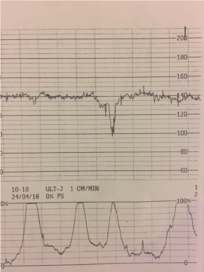
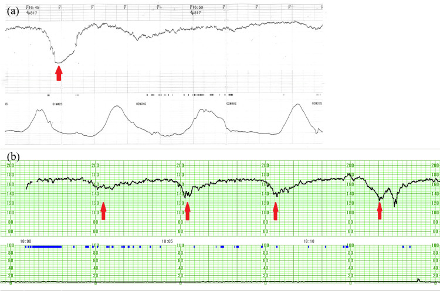

Página 7 · Vigilância aguda e cardiotocografia
Parâmetro 4a: as desacelerações ancoradas na contração
O batimento afunda…
…e é benigno: não pede nada.
O batimento afunda…
…e é sinal de asfixia: manda tirar o bebê.
Mesma cara — o batimento vai e volta. O que as separa não é a forma do vale. É onde ele cai em relação à contração.
Três tipos de DIP e a regra de ouro da correlação
Existem três tipos de DIP (desaceleração): tipo I (precoce / cefálico), tipo II (tardio) e tipo III (variável / umbilical). E a regra de ouro que abre qualquer leitura de desaceleração: para classificar uma desaceleração, é obrigatório correlacioná-la com a metrossístole — a contração. Sem olhar a contração ao lado, não se classifica DIP. A memória visual aqui é indispensável: reconhecer o padrão do traçado é o cerne da interpretação.
DIP I: coincide e é simétrico
O DIP I (precoce / cefálico) é a desaceleração que coincide com a contração e é simétrica — "vai e volta do mesmo jeito", sempre no mesmo padrão. Todos os DIP I são praticamente iguais entre si: começam quando a contração começa, atingem o fundo quando a contração atinge o pico, e voltam quando a contração passa. Espelham a contração.
O mecanismo do DIP I
O DIP I é um reflexo vagal por compressão do polo cefálico. A mecânica é intuitiva: a contração empurra o feto para baixo, a cabeça é espremida contra o canal vaginal, o vago desacelera o coração; passada a contração, descomprime e o batimento volta ao normal. É pressão na cabeça gerando bradicardia reflexa, sincronizada com a contração.
Interativo: acione a seta e o mecanismo para ver a coincidência vale–pico.
A contração espreme a cabeça no canal → reflexo vagal → a desaceleração coincide, simétrica, com o pico da contração. A seta temporal ligando o fundo do vale à metrossístole é o dispositivo de leitura da prova.A seta da prova
Um gesto simples que ajuda a laudar na segunda fase: desenhar uma seta ligando o fundo da desaceleração à metrossístole. A seta deixa clara a relação temporal — se o vale da desaceleração alinha com o pico da contração, coincidente, é DIP I. É truque de reconhecimento visual, e vale ouro quando o traçado da prova está apertado.
DIP I não exige conduta
Consequência prática: o DIP I é comum no trabalho de parto avançado, com a cabeça já encaixada, e não exige nenhuma conduta ou medida adicional. É fisiológico do descer da cabeça. Ver DIP I e correr para intervir é erro — ele é o benigno da dupla.

O DIP I didático isolado, com a seta temporal em destaque: a desaceleração acompanha a contração como imagem espelhada.
No canal superior, a FCF cai de uma basal ~140 bpm e atinge o nadir no mesmo eixo temporal do pico da contração (canal inferior). Esse alinhamento vale–pico é o achado do DIP I, com recuperação conforme a contração relaxa. Diferencie do DIP II (nadir depois do pico) e da variável (abrupta, em V/W, relação temporal instável).
Fonte: Piazze J et al., J Pregnancy Reprod 2018, Fig. 2, via OAText — Creative Commons Attribution (seta em overlay) · página de origem
DIP II: vem atrasado = asfixia
O DIP II (tardio) é a desaceleração que vem após a contração. E o significado é pesado: significa que o feto não tem reserva e não tolera a metrossístole — é sinal de asfixia. Diante de DIP II tardio, sobretudo de repetição, a conduta é tirar o bebê: a contração já passou e o feto continua a afundar, mostrando ausência de reserva. O atraso é a assinatura da insuficiência: o feto só afunda depois que a contração termina porque demorou a sentir a falta de oxigênio.
O mecanismo do DIP II
A mecânica do DIP II está na placenta. A contração uterina comprime os vasos que levam sangue à placenta e reduz o fluxo. O feto com reserva normal aguenta 40, 50, 60 segundos de contração sem se abalar. O feto sem reserva trabalha no limite e afunda tardiamente a cada redução de fluxo — a queda vem atrasada porque a reserva se esgota só depois de a contração ter comprimido os vasos por tempo demais. Contraste visual que fecha a dupla: no DIP I o vale coincide com o pico da contração; no DIP II o vale vem depois do pico.
Interativo: alterne o mecanismo e veja o vale atrasado em relação ao pico.
A contração comprime os vasos placentários → o feto sem reserva afunda tardiamente, com o vale após o pico. O atraso é a assinatura da insuficiência uteroplacentária — contraste direto com o DIP I, que coincide.
O reconhecimento do DIP II tardio (asfixia): a queda da FCF vem atrasada em relação à contração.
No painel (a), a contração sobe primeiro, atinge o pico, e só depois aparece o vale da desaceleração (seta). Esse atraso caracteriza a desaceleração tardia, associada à redução da troca uteroplacentária. Diferencie do DIP I (vale espelha o pico) e da variável (abrupta, em V/W).
Fonte: Yamano K et al., Cureus 2024, Fig. 1 — CC BY 4.0 · página de origem
| DIP I (precoce) | DIP II (tardio) | |
|---|---|---|
| Timing | Coincide com o pico | Após a contração |
| Causa | Compressão do polo cefálico / reflexo vagal | Compressão de vasos placentários / sem reserva |
| Forma | Simétrico, sempre igual | Tardio |
| Significado | Benigno | Asfixia |
| Conduta | Nenhuma | Tirar o bebê (sobretudo de repetição) |
Quiz — fixação
Num traçado, cada desaceleração começa junto com a contração, atinge o fundo no pico da contração e retorna quando ela termina, de forma simétrica e repetida. Classificação, mecanismo e conduta?
- B) Correta. Vale coincidindo com o pico + simetria repetida = DIP I (precoce/cefálico), reflexo vagal, benigno, sem conduta — típico do TP avançado com cabeça encaixada.
- A) Levaria a intervenção desnecessária. DIP II é tardio (vale após o pico); aqui coincide — qualquer "afundada" assusta se você não olha o timing.
- C) A descrição não bate. DIP III é variável e ligado a cordão, não simétrico e sincronizado.
- D) Distrator grosseiro de atenção ao sentido da curva. Aceleração sobe o batimento; aqui ele afunda.
O DIP II (tardio) indica asfixia porque:
- B) Correta. Insuficiência uteroplacentária: a contração reduz o fluxo, e o feto sem reserva afunda depois do pico — o atraso é a marca da falta de reserva.
- A) Troca o mecanismo entre os dois DIPs. Esse é o mecanismo do DIP I (cefálico/vagal), benigno — não do DIP II.
- C) Mistura o terceiro DIP na dupla. Compressão variável de cordão é o DIP III; o DIP II é placentário e tardio-fixo.
- D) Distrator de outro parâmetro. Descreve taquicardia (linha de base), não uma desaceleração.
Falta o DIP que não se ancora na contração — o que muda de forma, engana em pedaços do traçado, e concentra as piores pegadinhas da prova.